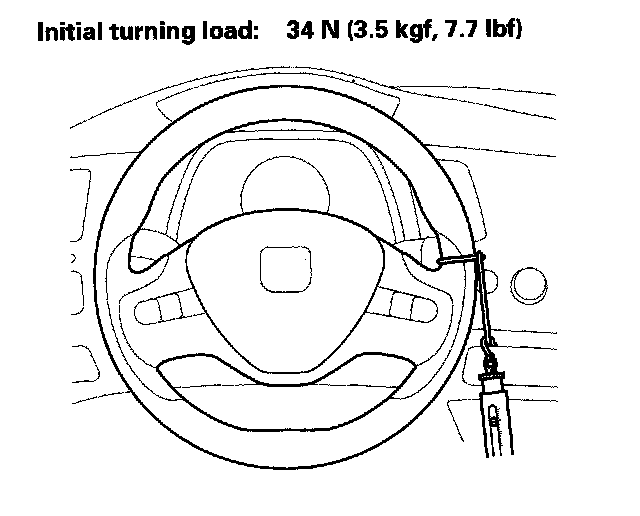

Power Assist Check
Power Assist CheckNOTE: This test should be done with original equipment tires and wheels at the correct tire pressure.
1. For the power steering type, check the power steering fluid level.
2. Start the engine, let it idle, and turn the steering wheel from lock-to-lock several times to warm up the component and the fluid (power steering type).
3. Attach a commercially available spring scale to the steering wheel. With the engine idling and the vehicle on a clean, dry floor, pull the scale as shown and read it as soon as the tires begin to turn.
^ If the scale reads no more than the specification, the steering gearbox and pump are OK.
^ For the power steering type, if the scale reads more than specifications, troubleshoot the steering system
^ For the EPS type, if the scale reads more than specifications, check for steering linkage, and check the rack guide adjustment.
